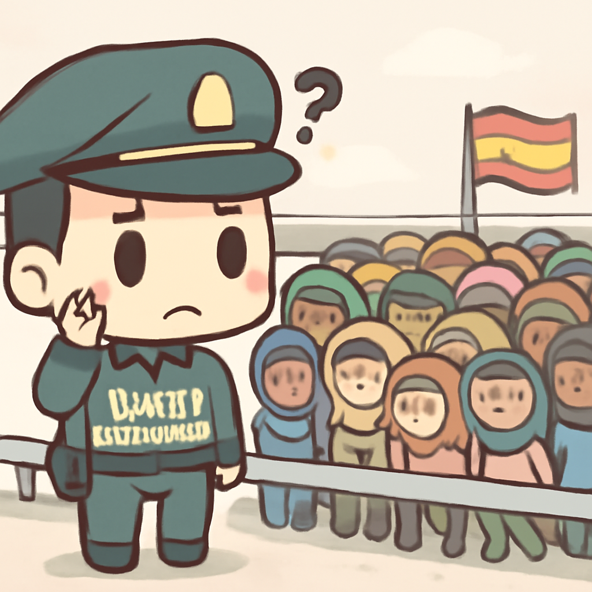
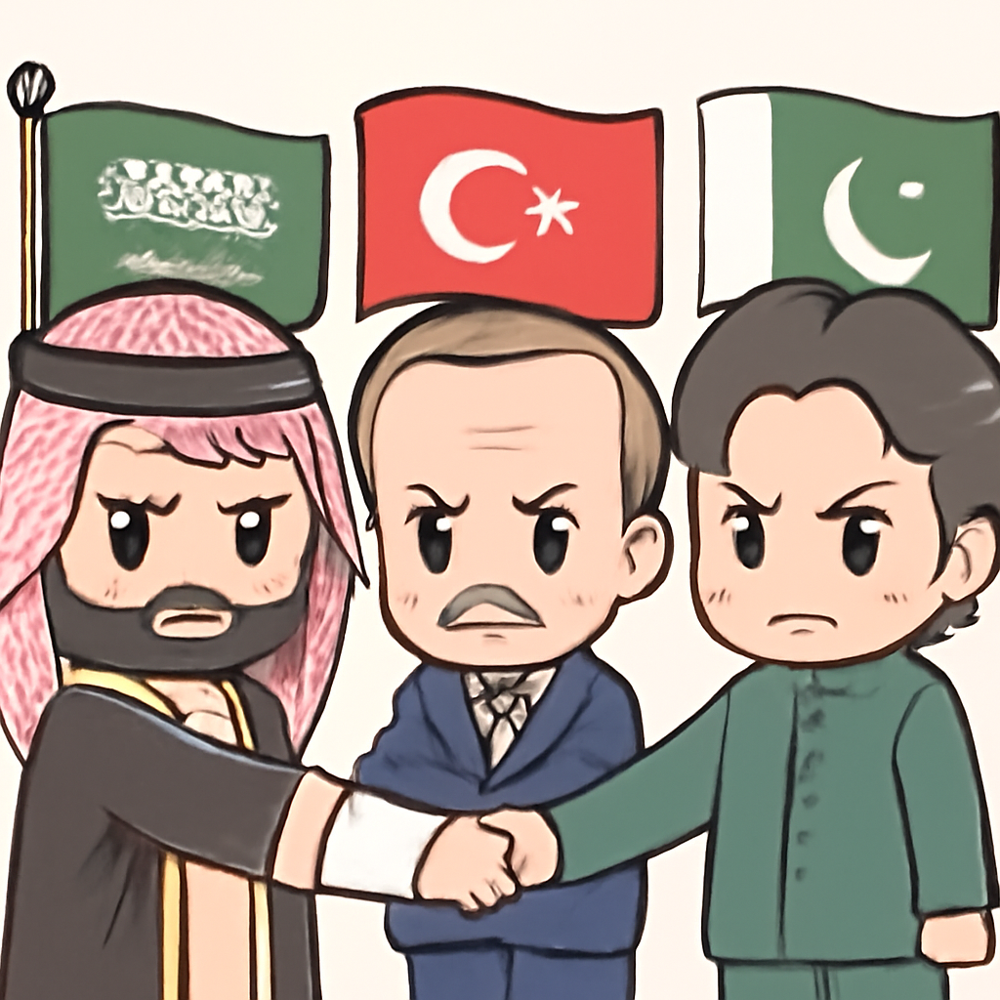
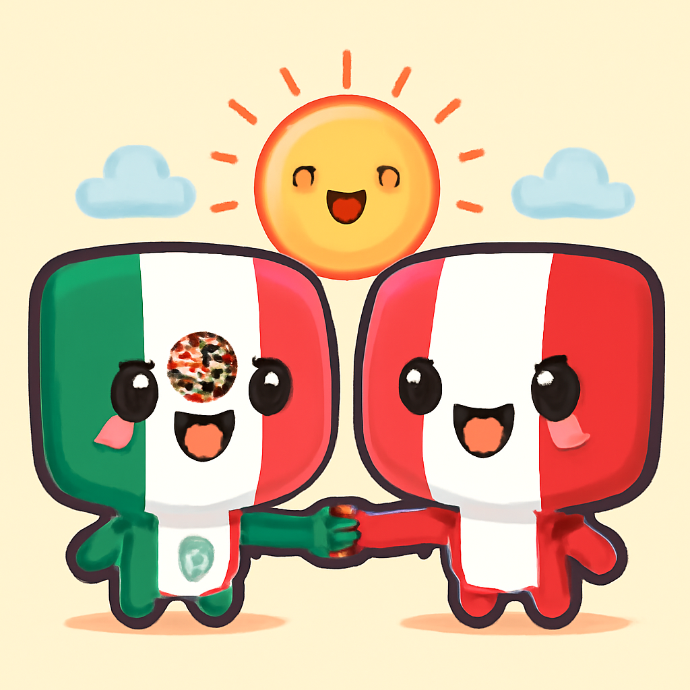

其一 · 西班牙塞烏塔 · 意大利邊界管控升級
西班牙塞烏塔因移民潮與意大利加強邊境管控。

在西班牙的塞烏塔，最近接獲約78,000名移民從摩洛哥湧入，引發了意大利的強烈反應，決定實施邊界管控。這一事件不僅影響了兩國的外交關係，也可能引發地中海地區對移民危機的更大討論，讓人對未來的政策走向充滿好奇。這一波移民潮，真是讓邊界管控成為熱議話題。
🔗 原始新聞 ↗
2026-08-08 · 以古觀今，以笑抗愁
西班牙塞烏塔因移民潮與意大利加強邊境管控。

在西班牙的塞烏塔，最近接獲約78,000名移民從摩洛哥湧入，引發了意大利的強烈反應，決定實施邊界管控。這一事件不僅影響了兩國的外交關係，也可能引發地中海地區對移民危機的更大討論，讓人對未來的政策走向充滿好奇。這一波移民潮，真是讓邊界管控成為熱議話題。
🔗 原始新聞 ↗
泰國一名學生開槍致八人死亡，槍支法成焦點。
在泰國曼谷，一名14歲的學生在家中和學校開槍，造成八人死亡，最後他也自殺了。這起事件讓泰國社會再次聚焦於槍支法的必要性，許多人開始呼籲加強管制。不論你持什麼觀點，這次事件都讓大家意識到，槍支問題真的不是一個可以輕描淡寫的話題。
🔗 原始新聞 ↗
沙烏地、土耳其與巴基斯坦簽署防務協議，顯示中東局勢緊張。

沙烏地阿拉伯、土耳其和巴基斯坦三國最近簽署了一項防務協議，明確表示對任何國家的攻擊都將視為對所有國家的攻擊。在中東這個不安的地區，這項協議可能會引發更多的外交動作，讓人不禁想知道會不會引來新的地緣政治風波。希望這份協議能成為和平的開始，而不是火上加油。
🔗 原始新聞 ↗
東京醫院手術中發生地震，醫生奮力保護病人。
不是每一天都能在手術室裡經歷地震！在日本東京，醫生在進行手術時，突如其來的地震讓全場驚慌失措，醫生們緊緊抓住手術台，保護病人。這次事件再次提醒我們，無論科技再先進，自然災害總是無法預測的。希望病人平安無事，醫生也能從這次經歷中學到更多應急技巧！
🔗 原始新聞 ↗
墨西哥與秘魯在庇護問題上恢復外交關係。

經過一段時間的冷淡，墨西哥與秘魯最近宣布恢復外交關係，這是因為秘魯前總理尋求庇護的事件作為背景。兩國之間的關係重要性不言而喻，這次恢復會不會為彼此的經濟和文化交流帶來新的機會？希望未來的合作能夠如同好朋友般，互相支持。
🔗 原始新聞 ↗